The randomisation schemes discussed so far all base the quantification of
linear correlations on the Fourier amplitudes of the data. Unfortunately, this
is not exactly what we want. Remember that the autocorrelation structure given
by

corresponds to the Fourier amplitudes only if the time series is one
period of a sequence that repeats itself every N time steps. This is, however,
not what we believe to be the case. Neither is it compatible with the null
hypothesis. Conserving the Fourier amplitudes of the data means that the
periodic auto-covariance function
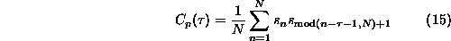
is reproduced, rather than  . This seemingly harmless difference can
lead to serious artefacts in the surrogates, and, consequently, spurious
rejections in a test. In particular, any mismatch between the beginning and
the end of a time series poses problems, as discussed e.g. in
Ref. [7]. In spectral estimation, problems caused by edge
effects are dealt with by windowing and zero padding. None of these techniques
have been successfully implemented for the phase randomisation of surrogates
since they destroy the invertibility of the transform.
. This seemingly harmless difference can
lead to serious artefacts in the surrogates, and, consequently, spurious
rejections in a test. In particular, any mismatch between the beginning and
the end of a time series poses problems, as discussed e.g. in
Ref. [7]. In spectral estimation, problems caused by edge
effects are dealt with by windowing and zero padding. None of these techniques
have been successfully implemented for the phase randomisation of surrogates
since they destroy the invertibility of the transform.
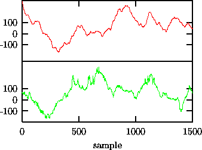
Figure: Effect of end point mismatch on Fourier based surrogates. Upper trace: 1500 iterates of 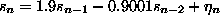. Lower trace: a surrogate sequence with the same Fourier amplitudes. Observe the additional ``crinkliness'' of the surrogate.
Let us illustrate the artefact generated by an end point mismatch with an example. In order to generate an effect that is large enough to be detected visually, consider 1500 iterates of the almost unstable AR(2) process, (upper trace of Fig. 6). The sequence is highly correlated and there is a rather big difference between the first and the last points. Upon periodic continuation, we see a jump between 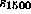 and 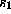. Such a jump has spectral power at all frequencies but with delicately tuned phases. In surrogate time series conserving the Fourier amplitudes, the phases are randomised and the spectral content of the jump is spread in time. In the surrogate sequence shown as the lower trace in Fig. 6, the additional spectral power is mainly visible as a high frequency component. It is quite clear that the difference between the data and such surrogates will be easily been picked up by, say, a nonlinear predictor, and can lead to spurious rejections of the null hypothesis.
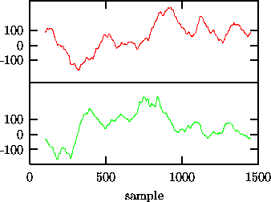
Figure: Repair of end point mismatch by selecting a sub-sequence of length 1350 of the signal shown in Fig. 6 that has an almost perfect match of end points. The surrogate shows no spurious high frequency structure.
The problem of non-matching ends can often be overcome by choosing a
sub-interval of the recording such that the end points do match as closely as
possible [33]. The possibly remaining finite phase slip at the
matching points usually is of lesser importance. It can become dominant,
though, if the signal is otherwise rather smooth. As a systematic strategy,
let us propose to measure the end point mismatch by
and the mismatch in the first derivative by
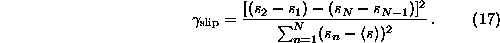
The fractions 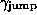 and  give the contributions to the total power of the series of the mismatch of the
end points and the first derivatives, respectively. For the series shown in
Fig. 6, 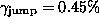 and the end effect
dominates the high frequency end of the spectrum. By systematically going
through shorter and shorter sub-sequences of the data, we find that a segment
of 1350 points starting at sample 102 yields
give the contributions to the total power of the series of the mismatch of the
end points and the first derivatives, respectively. For the series shown in
Fig. 6, 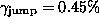 and the end effect
dominates the high frequency end of the spectrum. By systematically going
through shorter and shorter sub-sequences of the data, we find that a segment
of 1350 points starting at sample 102 yields  or an almost perfect match. That sequence is shown as the
upper trace of Fig. 7, together with a surrogate (lower
trace). The spurious ``crinkliness'' is removed.
or an almost perfect match. That sequence is shown as the
upper trace of Fig. 7, together with a surrogate (lower
trace). The spurious ``crinkliness'' is removed.
In practical situations, the matching of end points is a simple and mostly sufficient precaution that should not be neglected. Let us mention that the SOI data discussed before is rather well behaved with little end-to-end mismatch (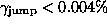). Therefore we didn't have to worry about the periodicity artefact.
The only method that has been proposed so far that strictly implements
 rather than 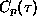 is given in Ref. [26] and will be
discussed in detail in Sec. 5 below. The method is very accurate
but also rather costly in terms of computer time. It should be used in cases
of doubt and whenever a suitable sub-sequence cannot be found.
rather than 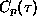 is given in Ref. [26] and will be
discussed in detail in Sec. 5 below. The method is very accurate
but also rather costly in terms of computer time. It should be used in cases
of doubt and whenever a suitable sub-sequence cannot be found.